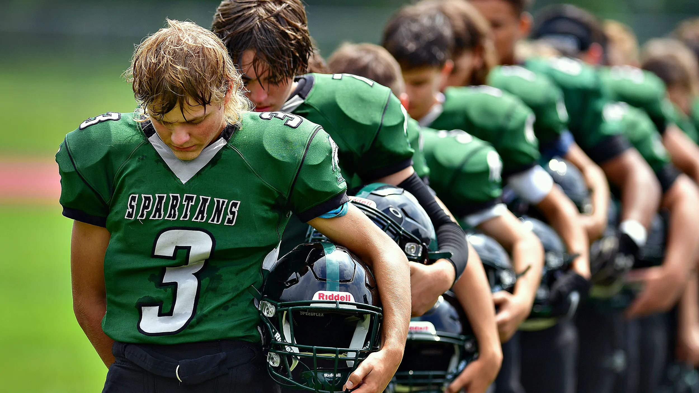
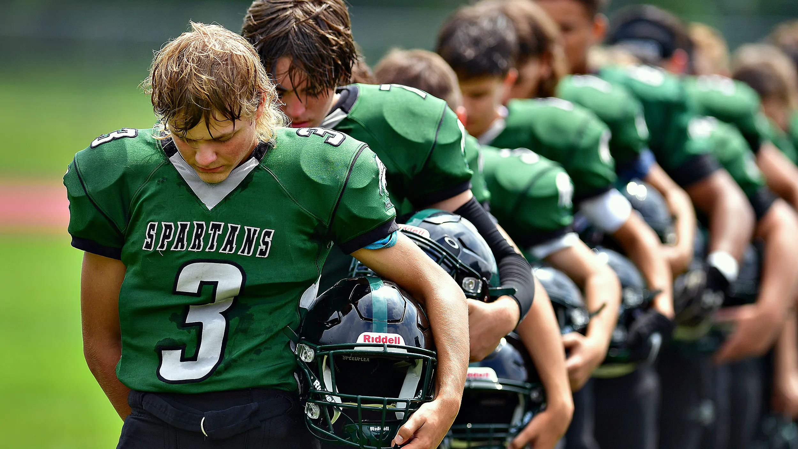

About Me
I got to York Tech and do football, basketball, and track.
I also like wheeling bikes with friends.
Links to the other things are on the left.
By: Aiden Johnson
I got to York Tech and do football, basketball, and track.
I also like wheeling bikes with friends.
Links to the other things are on the left.
